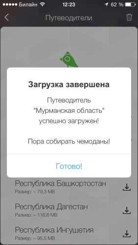
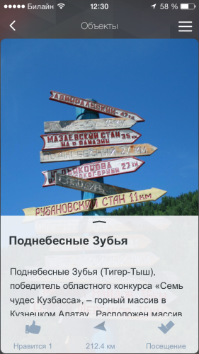
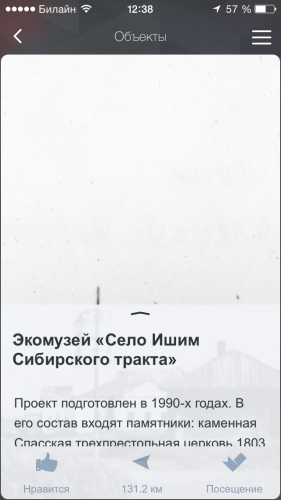
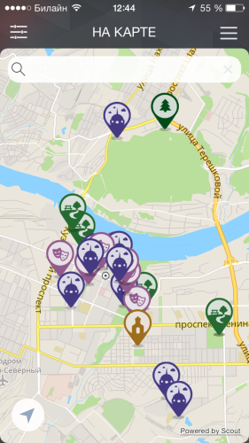
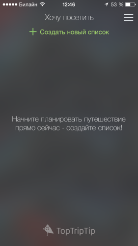

Когда путешествуешь на машине по России, а у нас на самом деле очень большая Родина, очень хочется не просто добраться из точки К (Кемерово) в точку М (Мыски, Москва, Море). Хочется посмотреть достопримечательности: побольше и в ограниченный период времени. А с навигацией по достопримечательностям в России пока дела обстоят в основном никак.
Добраться из центра Кемерова до попсовой Красной горки или Томской писаницы ещё как-то с помощью языка можно. А вот шансы посмотреть на единственный в мире памятник Лобсангу Рампе у транзитного путешественника чрезвычайно малы.
Путешественнику не хватает нормального интерактивного путеводителя — так думал я, пока ехал в Грузию и обратно. Мы явно проехали мимо десятков интересных мест. Забавно, но почти сразу после возвращения в Кемерово, в AppStore появилось приложение, которое призвано удовлетворить вот эти самые нужды.
Приложение бесплатно, 33 рубля придётся заплатить за offline-карту России, что, конечно немного.
Кузбасс — один из 28 регионов России, уже представленных в приложении. В городе Кемерово проект представляет Мария Решто, директор маркетингового центра «АС-Маркетинг». Мне не понаслышке известно, что значит по крупицам собирать историко-географические данные по региону, ведь уже несколько лет я занимаюсь кемеровской вики. Так и по словам Марии, работа была проведена большая и в сжатый срок, чтобы успеть к запуску.
После загрузки и установки программа предлагает скачать путеводитель по интересующему вас региону. Честно говоря, несколько смутил объём скачиваемого путеводителя. Кемеровский — занимает около 130 мегабайт. Мария написала, что это из-за объёма картинок, но у меня создалось впечатление, что картинки не были оптимизированы для приложения, а хранятся в оригинале.

Путеводители можно загрузить хоть все, но ведь вы помните как сэкономили и купили iPhone на 16 гигабайт.
Когда путеводитель загружен, можно начинать осматривать виртуальные окрестности. Достопримечательности кемеровского (кузбасского) путеводителя разбиты на 5 разделов: «Найти свой уголь», «Воссозданное прошлое», «Места для прогулок», «Памятные места», «Остроги и крепости».
Программа использует геопозиционирование, и показывает как далеко находится та или иная достопримечательность. К примеру популярное у кемеровчан «место для прогулок» Поднебесные Зубья находится сейчас в 212 километрах от меня.

Достопримечательностям можно ставить лайки, это пока единственная социальная составляющая. Комментариев пользователей нет, вероятно разработчики не хотят выделять ресурсы на модерацию, хотя комментаторы способны генерировать не менее полезный контент.
Сам интерфейс программы не показался мне продуманным и логичным. Большую часть карточки достопримечательности закрывает фотография, причём в большинстве случаев и от неё нет толка. Смысловая часть иллюстрации перекрывается небольшим текстовым блоком.

Как случайно выяснилось фотографий к объекту может быть несколько. Разработчики никак не показывают нам, что фотографий больше одной. Это можно понять только случайно тапнув по фотографии. Тогда Тогда вы увидите фото целиком, и сможете послайдить по остальным фоткам. Правда, несмотря на огромный размер файла с фотографией, увеличить, чтобы рассмотреть её нельзя. К тому же фотографии не всегда информативны, а для памятника Философа их две почти одинаковых (вы ведь помните про объём путеводителя?).
Приложение может показать все достопримечательности региона на карте.

Перед поездкой можно составить список мест, которые непременно нужно увидеть.

Приложение не показалось мне завершённым. Причём не только с точки зрения путеводителей, тут всё объяснимо — страна у нас большая. Есть над чем работать и разработчикам. Но и перспективы у него неплохи. Если меня прочтут основатели проекта, то намекну, что за информацию о мотелях на трассах я бы заплатил и 20 стоимостей оффлайн-карт.